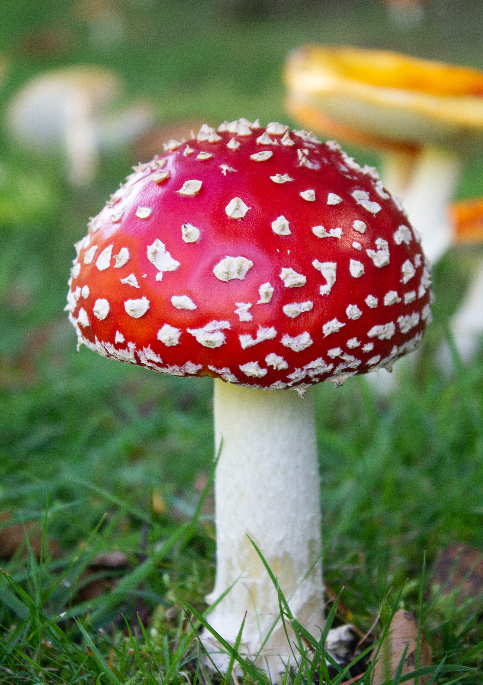
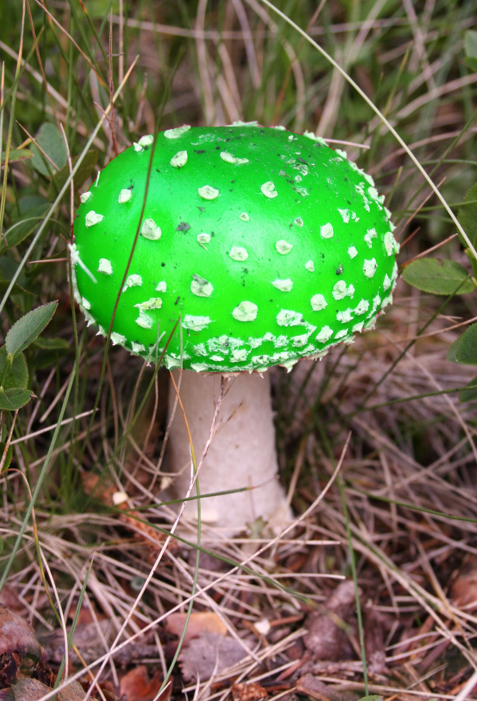
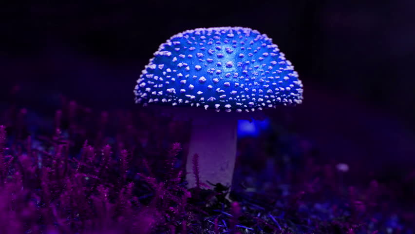
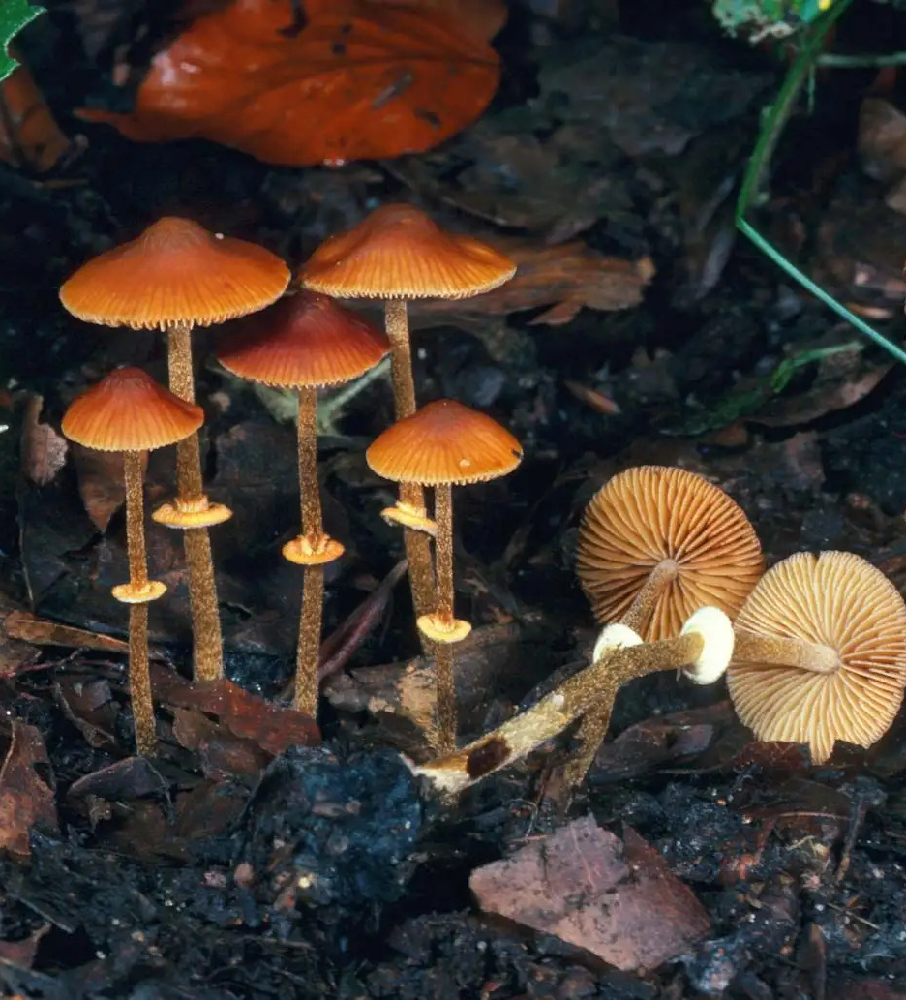
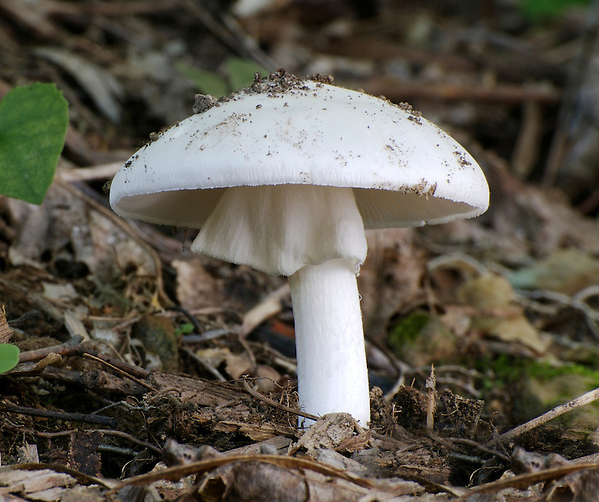

Home
FAQs
Contact
World Fungi Day!
Types of Fungi
Edible
Toxic
Too Cool to Be True
Russula Emetica
White stemmed mushrooms with red caps, and a faint, fruity odor
Found mainly beneath conifers (pines and spruces in particular) and occasionally also on mossy (fairly wet) heathland.
Also known as The Sickener. Poisonous when eaten raw or poorly cooked, and can cause nausea and vomiting, followed by severe stomach pains and diarrhea.
* In the WILD *

Amanita Muscaria
Spore-bearing, fruiting body typically in the form of a bright red and white-spotted, rounded cap on a white stem.
Found near evergreen and deciduous trees in temperate and subarctic regions of the Northern Hemisphere.
Sometimes referred to as "Toadstool Mushrooms" because they look like the spot where toads would sit. Toadstools are fungi widely believed to be inedible or toxic.
* In the WILD *
View Green
×

View Blue
×


Conocybe Filaris
These mushrooms are delicate. They have reddish-brown, bell shaped caps with long, fragile stems.
Growing in grasslands on dead moss, dead grass, sand dunes, decayed wood, and dung. Conocybe species generally prefer fertile soils in lawns and pastures and are found worldwide. An innocent-looking lawn mushroom that is especially common in the Pacific Northwest.
Potentially fatal if eaten. The onset of gastrointestinal symptoms often occurs 6-24 hours after the mushrooms were consumed, frequently leading to an initial misdiagnosis of food poisoning or the stomach flu. The patient may appear to recover, only to suffer from a life-threatening reappearance of the gastrointestinal distress, coupled with liver and kidney failure.
* In the WILD *

Amanita Virosa
When young, these mushrooms appear as white egg-shaped objects covered with a universal veil. As they grow, the mushroom breaks free, though there may be ragged patches of the veil remaining at the cap edges.
Native to Europe, not found in North America. They are found in mixed oak-hardwood conifer forests, other natural areas, or in the landscape. Found either singly or in small groups.
Sometimes referred to as "Destroying Angels". These incredibly toxic fungi are very similar in appearance to edible button mushrooms and the meadow mushrooms, and have been collected by mistake on numerous occassions. Symptoms take 5 to 24 hours to appear and include vomiting, delirium, convulsions, diarrhea, liver and kidney failure, and often lead to death.
* In the WILD *